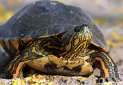
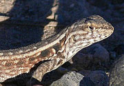
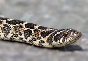

|
fotos
de animales silvestres de
ARGENTINA
|
 |
||
|
|
||||
|
photos
of wild animals of ARGENTINA
|
||||
|
"Reptiles" y Anfibios / "Reptiles" & Amphibians
|
Fotos de algunos reptiles
y anfibios de Argentina
(Debes tomar en cuenta que existen muchas otras especies no representadas en
este sitio web)
Photos of some reptiles & amphibians of Argentina
Los Reptiles
Los animales que reconocemos como "reptiles" en realidad no conforman un grupo demasiado prolijo. Hoy día la ciencia clasifica a los animales de acuerdo a su "árbol genealógico", y los estudios de filogenia han colocado a las aves como una de las ramas descendientes de la clase REPTILIA (ver el diagrama más abajo). |
Reptiles
What we commonly know as "reptiles" is really a rather untidy group. |
TODAS
LAS FOTOS DE ESTE SITIO WEB SON POR A. EARNSHAW
ALL
PHOTOS IN THIS WEBSITE TAKEN BY A. EARNSHAW
(c) Alec Earnshaw 1992-2019
Fotos / Photos |
Especies / Species |
|||
ANFIBIOS Ranas y sapos |
AMPHIBIANS Frogs & Toads |
55 |
21 |
|
 |
TESTUDINES Tortugas |
TESTUDINES Tortoises |
23 |
5 |
 |
LEPIDOSAURIA I Lagartos y Lagartijas |
LEPIDOSAURIA I Lizards |
65 |
24 |
 |
LEPIDOSAURIA II Serpientes y Culebras |
LEPIDOSAURIA II Serpents |
103 |
19 |
CROCODILIA Yacarés |
CROCODILIA Caimans |
13 |
2 |
|
258 |
71 |